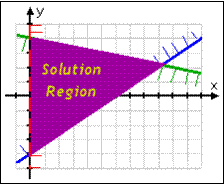
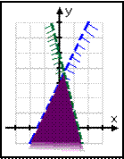
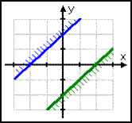

Solving Systems Of Inequalities
Solve the following system...$\table 2x-3y ≤12; x+5y≤20; x>0$
$1^{st}$, solve for $y$, if possible
$y≥(2/3)x-4$
$y≤(-1/5)x+4$
$x>0$ <- $x>0$ is a common "real life" constraint used for time, distance, # of units sold

To find the min & max values of the convex set $f(x,y)$, evaluate the vertices of its boundary
- This is a "closed" or "bounded" solution
- The solution region is a bounded polygonal convex set (a triangle, in this case)
To find the min & max values of the convex set $f(x,y)$, evaluate the vertices of its boundary
Vertex Theorem
the min or max value of $f(x,y)=ax+by+c$ on a polygonal convex set occurs at a vertex
Ex) find the max & min values of $f(x,y)=x+2y+1$ for the polygonal convex set with the following constraints...
$\table x≥0, \text",", y≥0, \text",", 2x+y≤4, \text",", x+y≤3 $
the min or max value of $f(x,y)=ax+by+c$ on a polygonal convex set occurs at a vertex
Ex) find the max & min values of $f(x,y)=x+2y+1$ for the polygonal convex set with the following constraints...
$\table x≥0, \text",", y≥0, \text",", 2x+y≤4, \text",", x+y≤3 $
$1^{st}$, graph to determine coordinates of vertices
$\table (0,0), \text",", (2,0), \text",", (1,2), \text",", (0,3)$
$2^{nd}$, evaluate at each vertex...
$\table f(0,0)=1, \text",", f(2,0)=3, \text",", f(1,2)=6, \text",", f(0,3)=7; min=1,,,,,,max=7$
$\table (0,0), \text",", (2,0), \text",", (1,2), \text",", (0,3)$
$2^{nd}$, evaluate at each vertex...
$\table f(0,0)=1, \text",", f(2,0)=3, \text",", f(1,2)=6, \text",", f(0,3)=7; min=1,,,,,,max=7$
| Open (unbounded) solutions go on forver in some direction | No solution... no common points |
|---|---|
|  |  |
Homework Video